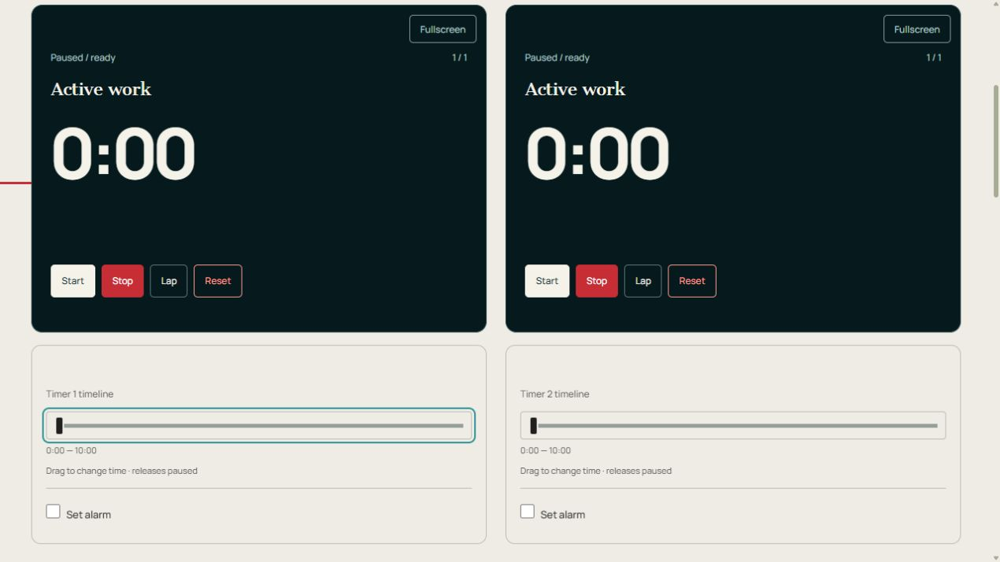

Temporizador de trabajos de taller
Mida el trabajo activo por separado para varios trabajos o clientes.
Mantenga abierta esta página. La restauración de los relojes está en pausa después de una recarga. Las señales de escenario requieren que el sonido esté habilitado.
Cómo funciona y consejos
Cómo funciona Temporizador de trabajos de taller
Mida el trabajo activo por separado para varios trabajos o clientes.
Nombra cada trabajo y haz una pausa durante los descansos. Utilice Lap para marcar el límite de una tarea.
Configurar y ejecutar el temporizador
- Abra Personalizar → Editar para revisar la base, los relojes y las intervalos. Nombra las tarjetas para tu gente, platos, muestras o trabajos.
- Toque un número de duración para el dial circular. Gire en el sentido de las agujas del reloj para agregar tiempo o en el sentido contrario a las agujas del reloj para restar, luego Aplicar. También puede escribir un número. Cerrar descarta el borrador del dial.
- Editar este reloj y registro de vuelta cambia una tarjeta en pausa. Editar temporizador cambia la configuración compartida y reconstruye el tablero cuando aplica cambios; exportar las lecturas primero.
- Iniciar cada medición, Vuelta en un punto de control y Parar en la meta. Iniciar todo está disponible para un inicio compartido.
- Arrastre la línea de tiempo debajo de un reloj para corregir el tiempo transcurrido. La liberación deja ese reloj en pausa. Verifique la posición, luego Reanudar.
Controles de un vistazo

- Inicio / Pausa — Ejecute o mantenga esta tarjeta únicamente.
- Detener — Pausa sin borrar el tiempo transcurrido.
- Vuelta — Registra el tiempo transcurrido y fraccionado sin parar.
- Reiniciar — Borre la ejecución de esta tarjeta y regrese a su primera intervalo.
- Inicio / Pausa / Reanudar
- Ejecuta o pausa esta tarjeta únicamente. Se excluye el tiempo de pausa.
- Detener
- Pausa este reloj sin borrar el tiempo transcurrido.
- Vuelta
- Registra el tiempo acumulado transcurrido y fraccionado sin parar.
- Reiniciar
- Restaura la primera intervalo de esta tarjeta y borra el tiempo y las vueltas transcurridos. Otras cartas no cambian.
- Iniciar todo/Pausar todo
- Inicia juntas las tarjetas elegibles o mantiene el tablero. En el modo por turnos solo comienza el primer jugador. Estos se encuentran en Personalizar en páginas de un solo reloj.
- Agregar reloj / Quitar reloj
- Agrega una copia de la primera configuración, hasta 12 tarjetas. Eliminar el reloj está dentro Editar este reloj y registro de vuelta; detenga la tarjeta primero.
- Exportar CSV
- Descarga la etapa actual y los segundos transcurridos para cada tarjeta, además de los totales de vuelta registrados y las divisiones. Esta instantánea no es un historial completo de la etapa ni una configuración reutilizable.
- Sonido activado / Sonido desactivado
- Alterna sonidos de escenario y recordatorios. El tic de transferencia y la alarma adicional tienen interruptores separados.
- Pantalla completa / Tablero de pantalla completa
- Amplía un reloj oscuro o el tablero completo. Salga con Salir de pantalla completa o Escape cuando sea compatible.
- Línea de tiempo
- La tira dentro del reloj muestra el progreso. Arrastre el control deslizante separado debajo para corregir el tiempo transcurrido; la liberación pausa esta tarjeta.
- Configurar alarma / Alarma en / Probar alarma
- Habilite una campana adicional, arrastre Alarma a una posición de tiempo transcurrido y pruébela. Esta campana tiene su propio interruptor, separado de los sonidos del escenario y del tic de transición al escenario. Mantenga la pestaña abierta.
- Clic al cambiar de etapa
- Activa o desactiva el clic de transferencia corta por separado de las alarmas de etapa.
Configuraciones y configuraciones guardadas
- Personalizar/Editar/Editar temporizador
- Personalizar abre las herramientas. Editar abre el editor completo. Pausa todos los relojes antes de aplicar una nueva configuración; Aplicar cambios reconstruye el tablero, por lo que primero exporte las lecturas. Cancelar cierra el editor.
- Plantillas / Configuración original / Práctica breve / Crear plantilla
- Las plantillas pertenecen a este temporizador. La configuración original restaura su plan inicial. La práctica breve proporciona espacios editables más cortos. Crear plantilla abre el editor; ingrese un nombre y Guardar actual como plantilla para conservar su plan.
- Guardar como temporizador personalizado / Duplicar / Guardar / Cancelar
- Guardar como temporizador personalizado le da a su plan un nombre en Mis temporizadores bajo el control de la cuenta. Duplicar guarda una copia separada. Guardar confirma el nombre; Cancelar cierra el formulario de nombramiento.
- Nombre del temporizador / Fundación / Relojes / jugadores / Ilustración
- Elija cuentas atrás secuenciales, relojes de cuenta atrás independientes o bancos de tiempo de jugadores, con 1 a 12 tarjetas. La ilustración elige ilustraciones para un temporizador personalizado.
- Agregar intervalo / Subir / Bajar / Quitar
- Construir y reordenar la lista de espacios. Mantenga al menos una intervalo. Segundos es su duración; La instrucción/cantidad de agua/punto de control muestra una nota en el reloj.
- Avanzado: preparación, descanso, repeticiones y sonido
- Prepare and Rest inserte intervalos adicionales en segundos. Repetir secuencia repite el plan. La pantalla elige abajo o arriba dentro de una intervalo. Pasar al siguiente espacio controla automáticamente el traspaso en cero.
- Señales del intervalo
- Al inicio y al final, elija un sonido por intervalo. Faltan segundos para el aviso; Recordatorio cada segundo transcurrido entre señales repetidas. Zero desactiva una advertencia o recordatorio. Las marcas de color de fase funcionan o descansan.
- Sonido habilitado / Volumen / Sonido al grabar una vuelta / Tictac silencioso durante los últimos 10 segundos / Ocultar dígitos del reloj
- Controla el sonido del escenario, su volumen, clics de vuelta opcionales, tictac final y visualización numérica. El tic de transición de etapa y Establecer alarma tienen interruptores separados.
- Estrella delineada / Hacer temporizador de inicio
- La estrella agrega esta página a la fila de favoritos en la página principal y otros temporizadores. Presiónelo nuevamente para quitarlo. Hacer temporizador de inicio elige el temporizador que se abre desde la página de inicio.
- Iniciar sesión con Google / Cerrar sesión / Mis temporizadores / Cargar configuración sincronizada
- El control de cuenta inicia o cierra sesión. Mis temporizadores enumera los temporizadores personalizados guardados. Cargar configuración sincronizada carga los cambios recibidos en la cuenta; pausar un cronómetro en ejecución primero.
Ejemplo: medir el tiempo de trabajo activo
Nombra cada trabajo. Comience a trabajar, deténgase durante un descanso y reanude después. La vuelta marca un punto de control sin parar. Exporte CSV antes de restablecer si necesita las lecturas. El temporizador no calcula cargos ni crea facturas.
Otras formas de usarlo
- Comparación de tareas repetidas
- Separar descansos del trabajo activo
Límites de ahorro, sonido y navegador
Exporta tiempos transcurridos para tus registros. La facturación y las facturas no se calculan.
Las configuraciones, las plantillas con nombre, los temporizadores personalizados y los favoritos se guardan en este navegador. Inicie sesión con Google en la parte superior derecha para sincronizar las configuraciones guardadas. Si aparece Cargar configuración sincronizada, haga una pausa antes de cargar. La sincronización de configuración guardada no sincroniza relojes en vivo entre dispositivos.
Mantenga esta pestaña abierta y pruebe el sonido en el dispositivo que utilizará. Los teléfonos y navegadores pueden retrasar las alarmas en pestañas en segundo plano o mientras están bloqueados. Recargar restaura los relojes guardados en pausa; Cerrar la página no mantiene activa la alarma en vivo.
Exportar lecturas antes de Reset, quitar una tarjeta o aplicar otro plan. CSV es una instantánea; Los guardados locales automáticos no son un archivo de resultados permanente.